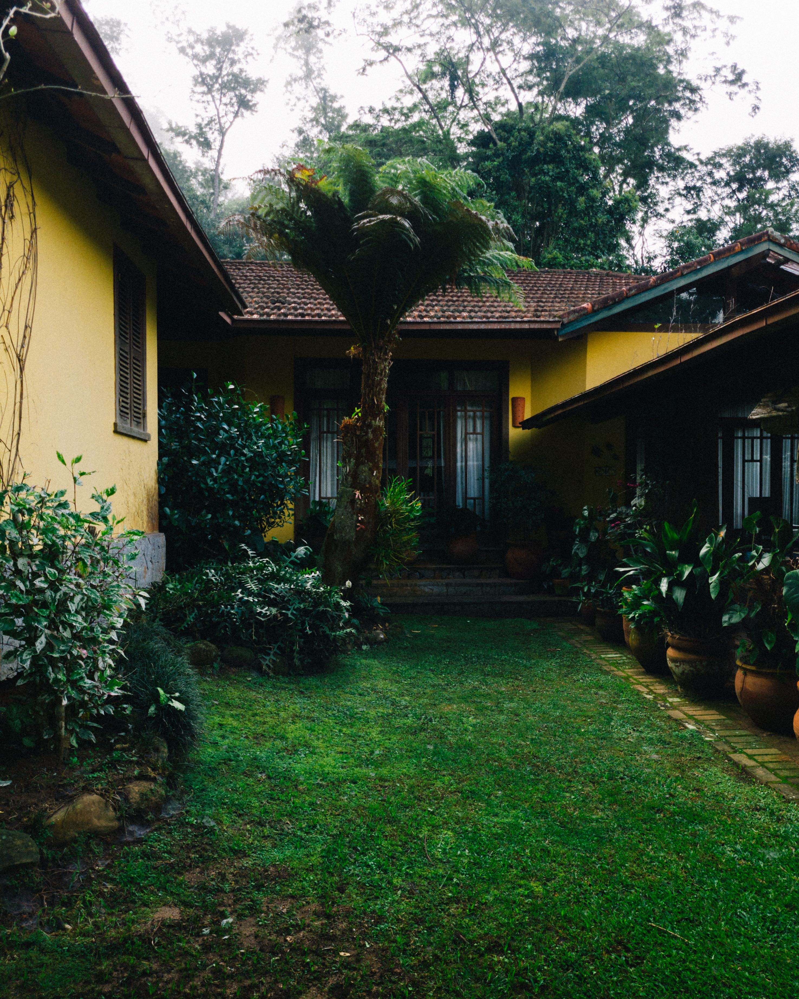

In This Article
- Introduction
- Start With the Real Space
- Define the Main Function
- Plan Proportions Carefully
- Work With Light
- Choose Materials for Daily Use
- Create Visual Continuity
- Think About Comfort
- Keep Safety a Priority
- Plan Maintenance From the Beginning
- Set a Complete Budget
- Test Before Committing
- Avoid Common Mistakes
- Review the Finished Result
- Frequently Asked Questions
- Outdoor Lighting Zones
- Reduce Glare and Light Spill
- Final Planning Checklist
- Conclusion
Introduction
Choosing lighting for a comfortable and safe terrace works best when the real space, daily habits, dimensions, safety, maintenance, and visual character are considered together. A successful result should make the area easier and more pleasant to use rather than adding complexity. Observe the space at different times, write down the main needs, and separate essential requirements from decorative preferences.
Start With the Real Space
Measure before buying or changing anything. Record circulation routes, fixed furniture, doors, windows, electrical points, and other elements that will remain. Photographs are useful references, but they cannot replace direct observation of scale, light, and everyday movement.
For choosing lighting for a comfortable and safe terrace, evaluate this point in relation to the surrounding area rather than in isolation. Compare at least two workable options, check dimensions and specifications, and favor the solution that supports everyday use with the least unnecessary complication.
Changes should also remain adaptable. Household routines, furnishings, seasons, and personal needs can evolve, so leaving reasonable flexibility usually produces a more durable result than designing around one temporary trend or photograph.
Define the Main Function
Decide what the area needs to accomplish first. Prioritizing function makes later choices about style, color, materials, and accessories much easier. Consider who uses the space, at what times, and whether needs change during the week or across seasons.
For choosing lighting for a comfortable and safe terrace, evaluate this point in relation to the surrounding area rather than in isolation. Compare at least two workable options, check dimensions and specifications, and favor the solution that supports everyday use with the least unnecessary complication.
Changes should also remain adaptable. Household routines, furnishings, seasons, and personal needs can evolve, so leaving reasonable flexibility usually produces a more durable result than designing around one temporary trend or photograph.
Plan Proportions Carefully
Compare the dimensions of every important element with the space around it. Use painter's tape, paper templates, or temporary arrangements whenever possible. Testing scale before committing can prevent purchases that look suitable online but feel too large, too small, or awkward at home.
For choosing lighting for a comfortable and safe terrace, evaluate this point in relation to the surrounding area rather than in isolation. Compare at least two workable options, check dimensions and specifications, and favor the solution that supports everyday use with the least unnecessary complication.
Changes should also remain adaptable. Household routines, furnishings, seasons, and personal needs can evolve, so leaving reasonable flexibility usually produces a more durable result than designing around one temporary trend or photograph.
Work With Light
Observe natural and artificial light at the times when the space is normally used. Light affects comfort, visibility, color perception, and atmosphere. Rather than adding brightness everywhere, identify where useful light is actually needed and where softer illumination creates a calmer result.
For choosing lighting for a comfortable and safe terrace, evaluate this point in relation to the surrounding area rather than in isolation. Compare at least two workable options, check dimensions and specifications, and favor the solution that supports everyday use with the least unnecessary complication.

Changes should also remain adaptable. Household routines, furnishings, seasons, and personal needs can evolve, so leaving reasonable flexibility usually produces a more durable result than designing around one temporary trend or photograph.
Choose Materials for Daily Use
Select materials according to wear, cleaning, moisture, sunlight, and frequency of use. Read manufacturer care information before purchasing. A beautiful finish that demands maintenance incompatible with the household routine may become frustrating and need replacement sooner than expected.
For choosing lighting for a comfortable and safe terrace, evaluate this point in relation to the surrounding area rather than in isolation. Compare at least two workable options, check dimensions and specifications, and favor the solution that supports everyday use with the least unnecessary complication.
Changes should also remain adaptable. Household routines, furnishings, seasons, and personal needs can evolve, so leaving reasonable flexibility usually produces a more durable result than designing around one temporary trend or photograph.
Create Visual Continuity
A coordinated result does not require identical colors or matching sets. Repeating one or two materials, tones, shapes, or finishes is often enough to connect the new choice with the rest of the home. Keep a clear visual hierarchy so that not every element competes for attention.
For choosing lighting for a comfortable and safe terrace, evaluate this point in relation to the surrounding area rather than in isolation. Compare at least two workable options, check dimensions and specifications, and favor the solution that supports everyday use with the least unnecessary complication.
Changes should also remain adaptable. Household routines, furnishings, seasons, and personal needs can evolve, so leaving reasonable flexibility usually produces a more durable result than designing around one temporary trend or photograph.
Think About Comfort
Comfort should be evaluated through real use. Check reach, seating positions, sightlines, movement, glare, temperature, and any other practical condition relevant to the area. Small adjustments in placement can often improve the experience more than adding extra decoration.
For choosing lighting for a comfortable and safe terrace, evaluate this point in relation to the surrounding area rather than in isolation. Compare at least two workable options, check dimensions and specifications, and favor the solution that supports everyday use with the least unnecessary complication.
Changes should also remain adaptable. Household routines, furnishings, seasons, and personal needs can evolve, so leaving reasonable flexibility usually produces a more durable result than designing around one temporary trend or photograph.
Keep Safety a Priority
Decorative decisions should never compromise safe circulation, secure mounting, electrical requirements, ventilation, or access. Follow product instructions and local requirements. When work involves wiring, structural support, or another technical issue beyond simple decoration, use an appropriately qualified professional.
For choosing lighting for a comfortable and safe terrace, evaluate this point in relation to the surrounding area rather than in isolation. Compare at least two workable options, check dimensions and specifications, and favor the solution that supports everyday use with the least unnecessary complication.
Changes should also remain adaptable. Household routines, furnishings, seasons, and personal needs can evolve, so leaving reasonable flexibility usually produces a more durable result than designing around one temporary trend or photograph.
Plan Maintenance From the Beginning
Ask how each surface or product will be cleaned, inspected, adjusted, or replaced. Easy access and realistic care routines help a project remain attractive over time. Keep product references and instructions after installation so future maintenance is simpler.
For choosing lighting for a comfortable and safe terrace, evaluate this point in relation to the surrounding area rather than in isolation. Compare at least two workable options, check dimensions and specifications, and favor the solution that supports everyday use with the least unnecessary complication.
Changes should also remain adaptable. Household routines, furnishings, seasons, and personal needs can evolve, so leaving reasonable flexibility usually produces a more durable result than designing around one temporary trend or photograph.
Set a Complete Budget
Calculate the full cost rather than the price of one visible item. Include hardware, installation, accessories, delivery, preparation, and likely maintenance when relevant. Establishing a maximum budget before shopping makes it easier to compare alternatives on equal terms.
For choosing lighting for a comfortable and safe terrace, evaluate this point in relation to the surrounding area rather than in isolation. Compare at least two workable options, check dimensions and specifications, and favor the solution that supports everyday use with the least unnecessary complication.
Changes should also remain adaptable. Household routines, furnishings, seasons, and personal needs can evolve, so leaving reasonable flexibility usually produces a more durable result than designing around one temporary trend or photograph.
Test Before Committing
Samples and temporary tests are valuable. View colors and materials in the actual light, mark dimensions on the floor or wall, and use the proposed arrangement for a short period when possible. A practical test often reveals issues that are invisible in a catalog.
For choosing lighting for a comfortable and safe terrace, evaluate this point in relation to the surrounding area rather than in isolation. Compare at least two workable options, check dimensions and specifications, and favor the solution that supports everyday use with the least unnecessary complication.
Changes should also remain adaptable. Household routines, furnishings, seasons, and personal needs can evolve, so leaving reasonable flexibility usually produces a more durable result than designing around one temporary trend or photograph.
Avoid Common Mistakes
Avoid buying without measuring, choosing only by trend, ignoring care requirements, or adding several changes at once without evaluating them. Work in stages. After one important change, use the space normally and decide what is genuinely missing before buying more.
For choosing lighting for a comfortable and safe terrace, evaluate this point in relation to the surrounding area rather than in isolation. Compare at least two workable options, check dimensions and specifications, and favor the solution that supports everyday use with the least unnecessary complication.
Changes should also remain adaptable. Household routines, furnishings, seasons, and personal needs can evolve, so leaving reasonable flexibility usually produces a more durable result than designing around one temporary trend or photograph.
Review the Finished Result
After completing the project, observe it during normal daily use for several days. Check whether circulation remains clear, maintenance is manageable, and the main function has improved. If something feels excessive, remove or reposition it before assuming another purchase is necessary.
For choosing lighting for a comfortable and safe terrace, evaluate this point in relation to the surrounding area rather than in isolation. Compare at least two workable options, check dimensions and specifications, and favor the solution that supports everyday use with the least unnecessary complication.
Changes should also remain adaptable. Household routines, furnishings, seasons, and personal needs can evolve, so leaving reasonable flexibility usually produces a more durable result than designing around one temporary trend or photograph.
Frequently Asked Questions
What is the best way to begin?
Start by measuring and observing the real space, then define the main functional need before comparing products or styles.
How long should I test a change?
There is no fixed period, but several days of normal use and different light conditions can reveal issues that are not obvious immediately.
What mistakes should I avoid?
Avoid buying without measurements, ignoring maintenance and safety, or choosing a solution only because it is fashionable.
Outdoor Lighting Zones
Divide the terrace into practical zones such as access, circulation, dining, seating, steps, and planting. Each zone may need a different type or intensity of light. Paths and level changes deserve clear visibility, while seating areas often benefit from softer, well-shielded light that does not shine directly into people's eyes.
Outdoor fixtures must be suitable for the exposure conditions where they are installed. Check manufacturer ratings and installation instructions for rain, humidity, dust, and temperature. Position cables, connections, and controls so they remain protected and do not create trip hazards.
Reduce Glare and Light Spill
More light is not automatically better outdoors. Shielded fixtures and careful aiming can illuminate useful surfaces while reducing glare toward neighbors, windows, and the night sky. Test the terrace from seated eye level as well as from indoors to identify uncomfortable bright points.
Final Planning Checklist
Before purchasing, review measurements, intended use, safety requirements, cleaning needs, installation conditions, and the complete budget. Keep a short list of non-negotiable requirements and compare products against it instead of being guided only by appearance.
Once installed, use the area normally before adding accessories. This final evaluation helps distinguish a genuine functional need from an impulse to fill empty space.
Conclusion
Choosing lighting for a comfortable and safe terrace becomes easier when function, proportion, maintenance, safety, and appearance are planned together. Measure, compare, and test before making permanent decisions. A thoughtful project can remain useful and visually balanced for longer because it responds to the way the space is actually used.